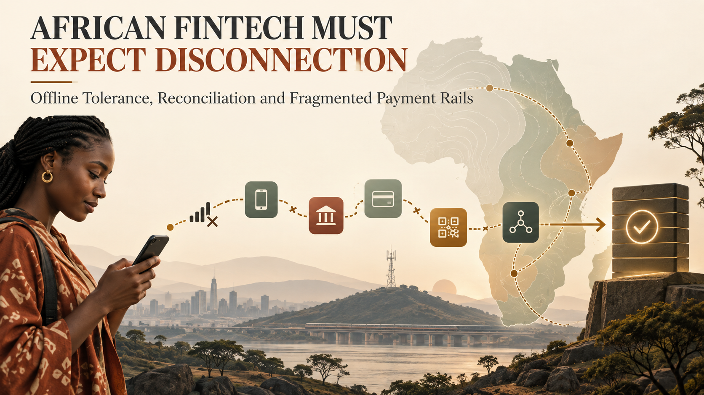

What does a payment app owe a customer when the network disappears at the exact moment money is moving?
It owes more than a spinner.
Across African markets, fintech products often connect mobile money operators, banks, card processors, agent networks, USSD channels and internal ledgers. These rails do not always share the same identifiers, availability or settlement timing. Meanwhile, customers may be using intermittent mobile data, low-cost devices or sessions that cannot remain open while a provider completes its work.
The architecture must expect uncertainty without turning uncertainty into duplicate payments or unexplained balances.
Financial finality still needs an authoritative system. A device should not tell a customer that a payment succeeded when it has only stored a local instruction.
Offline-tolerant design means the interface can preserve intent, protect the user from accidental repetition and explain the current state. It can save a draft, queue a non-financial action, display the last verified balance and resume a pending workflow when connectivity returns.
For a transaction, the product should distinguish clearly between not submitted, submitted, pending confirmation, successful and failed. “Pending” is a real state, not an error message to hide.
On an unreliable connection, a customer may tap twice because nothing appears to happen. They may close the app, switch networks or visit an agent to ask whether the transaction completed.
The interface should disable unsafe duplicate submission, keep a durable local reference and show a human-readable receipt number before final confirmation where possible. When the app reconnects, it should query the server using that reference rather than blindly resending the original payment command.
The customer should also know what to do next. A useful pending screen can state that the request was received, that no second payment is required, when the next status check will happen and how to contact support.
Each provider exposes different fields and status names. One may use SUCCESS; another may use numeric codes; another may acknowledge the request and send the final state later.
Do not spread those provider-specific meanings across the entire application. Build an adapter for each rail and map external responses into a controlled internal transaction model.
That model should retain the raw provider reference and important response data for investigation, while presenting consistent states to the rest of the product. The adapter owns translation. The ledger owns the business truth.
If money can move outside the immediate request-response cycle, reconciliation is not an accounting afterthought. It is how the system becomes correct after missed callbacks, delayed settlement and provider outages.
Every transaction should have an internal immutable identifier, provider reference, amount, currency, rail, timestamps and a transition history. Scheduled processes should compare pending or settled records with provider APIs and settlement reports.
Differences need categories and owners. A provider-success/local-pending mismatch may be safe to repair automatically. A value mismatch needs review. An unresolved debit may require escalation or reversal under the provider’s rules.
Reconciliation reports should measure unresolved age and financial exposure, not merely count records.
USSD can reach customers without smartphone data, but sessions are short and can expire. The backend should not depend on a session remaining open until every downstream provider responds.
Create a durable transaction before the final external call, return a clear pending or acknowledgement message and provide a later confirmation route such as SMS, an agent receipt or a status query code.
Agent-assisted transactions also need clear roles and auditability. Record the customer, agent, device or channel, location when legitimately required, and the authorization method. Protect both parties from disputes by preserving evidence without exposing unnecessary personal data.
Every money-moving instruction needs a stable business key. A retry caused by poor connectivity must not create a second debit. Enforce uniqueness in the database and use provider idempotency features when they exist.
Where a rail lacks native idempotency, combine internal uniqueness, provider reference lookups and careful reconciliation. Never assume a timeout is a failure.
The same rule applies to callbacks. Providers may deliver the same event more than once. Processing must be safe to repeat.
Offline-tolerant applications may store drafts, cached records or queued operations. That data should be minimized, encrypted using platform-appropriate controls and cleared when no longer required.
Do not cache secrets, full authentication tokens or sensitive identity documents simply to make the interface feel seamless. Use short-lived credentials, secure storage and server-side authorization. A rooted or shared device should not reveal another customer’s financial history.
Support teams need a unified view across rails. They should be able to search with an internal reference, provider reference, phone number or order ID, subject to access controls.
The screen should show the timeline, current authority, last provider response, reconciliation result and safe recovery actions. Manual adjustments require dual control or approval when the financial impact is significant.
Monitoring should track rail availability, latency, pending age, callback delay, duplicate attempts, reconciliation mismatches and reversal volume. A provider can be technically online while degrading enough to harm customers.
AfricaNenda’s State of Inclusive Instant Payment Systems work documents the expansion of instant payment systems across Africa and the continuing importance of inclusive design. More infrastructure is valuable, but products will still integrate multiple schemes, operators and channels for years.
Interoperability improves reach. It does not eliminate the need for adapters, evidence, reconciliation and customer communication.
A product is not inclusive merely because it has a low minimum balance or a mobile interface. It must remain understandable when connectivity is weak and recover correctly when systems disagree.
Offline tolerance protects the user’s intent. Idempotency protects against duplicate effects. A normalized internal model absorbs differences between rails. Reconciliation restores correctness. Clear operational tools make support possible.
For African fintech, these are not edge-case improvements. They are part of designing for the real environment.
I build fintech, API, USSD, mobile and web systems with transaction integrity, reconciliation and operational recovery treated as core product requirements. To discuss a project, email hello@massoda.me or contact me on WhatsApp.